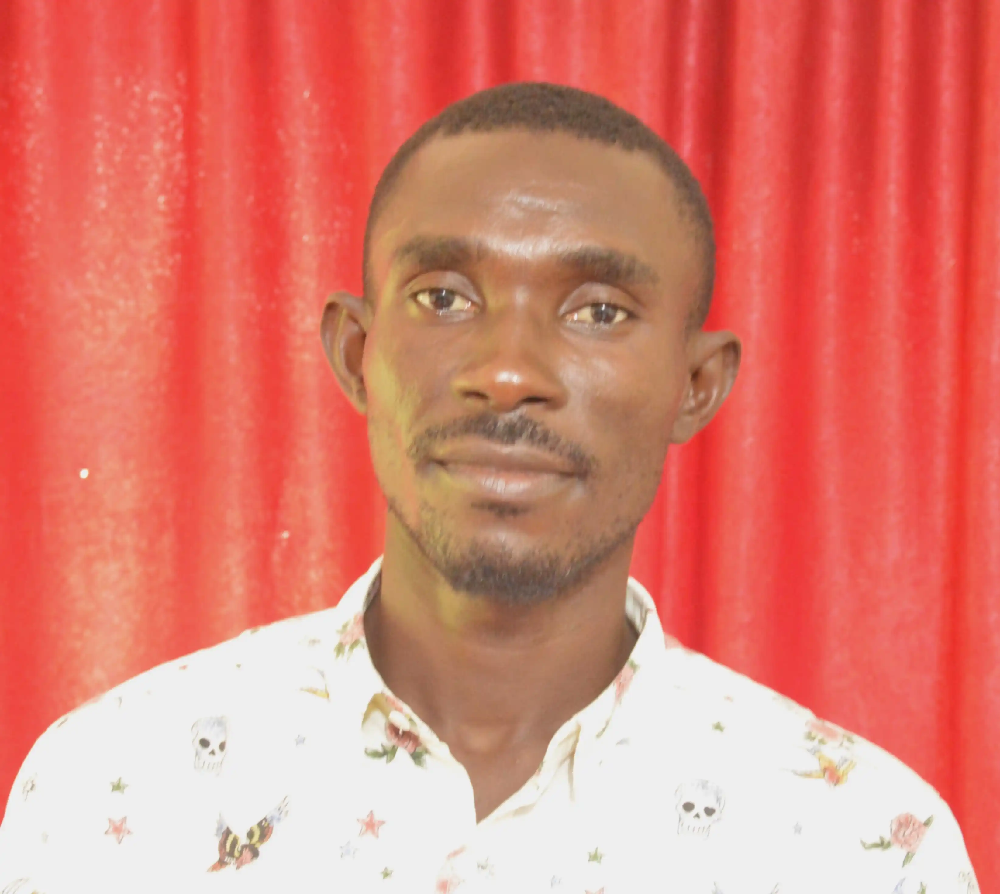

Jesse Eyak|WDD130
My name is Jesse Eyak and I am a student at BYU-Idaho. I am studying Web Design and Development. I am from Nigeria and I love to go rafting.I am excited to learn more about web design and development and I am excited to see where this will take me.